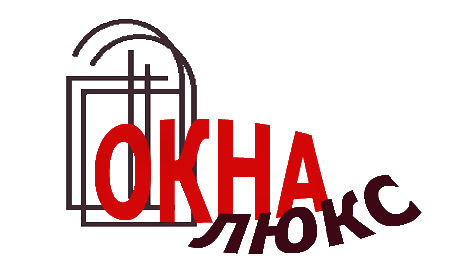

Александр (26.06.17)
«Делали балкон месяц назад. Обзванивали компании, решили остановиться на Окна ЛЮКС.
Привезли окна, на следующий день поставили. Мне нравится, а мужу понравилось то,что не надо потом доделывать пороги, подоконники и выкидывать мусор. »
Ирина (05.09.17)
«На первый взгляд поставили окна хорошо.
Посмотрим как они будут себя вести в процессе эксплуатации. Все понравилось .Спасибо. Специалист по замерам - Николай, замер сделал как надо.
Приехал оперативно в оговоренное время. »
Дмитрий (08.02.17)
«Очень хорошие окна, спасибо за качество прдоставленное Вашей компанией!
Выбирали среди нескольких компаний, но все таки остановились на "Окна ЛЮКС" и не сколько не пожалели, все идиально. Спасибо!»
ВИЗИТКА
- О НАС
Наша компания работает в Бузулуке с 2006 года. За этот период нашими клиентам стало более 3 мл. чел..Площадь остикления сотавила более 8 тысяч кв. м. Наши окна радуют своих хозяев в г.Бузулук, населенных пунктах Бузулукского, Грачевского, Курманаевского, Тотского района.
- ГАРАНТИИ
"Окна ЛЮКС" устанавливает на проданные им изделия из ПВХ гарантийное обслуживание сроком 24 месяца.Стабильность каждой партии продукции обеспечиваеться благодаря современному оборудованию и соблюдению всех технологических требований концерна profine GmbH.
- СКИДКИ И АКЦИИ
В нашей компании действуют скидки от обьема, скидки пенсионерам и молодоженам. Акция для заказчиков имеющих детей до 1 года, при заказе окна с детским бронирующим замком в подарок.
- ПРЕИМУЩЕСТВА
- Экологичность
- Тепло
- Безапасность
- Защита от шума
- Больше света
- ЭКОЛОГИЧНОСТЬ
Профиль KBE производиться по уникальной технологии greenline. Не содержащие свинец окна KBE рекомендованны для установки в детских и лечебно-профилактических учереждениях. Экологическая безопасность окон соответствует международному стандарту эко маркировки "Листок жизни".
- ЗАЩИТА
Благодаря повышенной герметичности окон из профиля KBE_Expert, в Вашем доме будут тишина и спокойствие, даже если за окном оживленная магистраль или стройка.